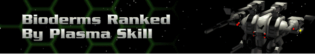

Legend:
Range – the maximum distance, in hexes, over which the weapon can fire.
Rounds – the number of times the weapon can fire per turn; note that some weapons fire bursts of shots with a single firing action.
Energy – total energy cost in battery or reactor power to fire the weapon once.
SDam – the total damage the weapon inflicts on the facing shield side of a target.
ADam – the total damage a weapon inflicts on the target’s armor if no shields are up.
Tech – the Technology Level at which the weapon is acquired.
Advanced Technology Weapons |
Description |
Range |
Rounds |
Energy |
SDam |
ADam |
Tech |
ElectroMagnetic Pulse |
Uses a pulse of electromagnetic radiation to seriously damage shields with a single shot. |
5 |
1 |
32 |
150 |
0 |
1 |
EMP Beamer |
Harnesses the power of EMP radiation to project an electromagnetic pulse that inflicts huge damage on shields. |
15 |
1 |
36 |
250 |
0 |
4 |
Particle Beam Weapon |
Based on particle beam technology, this weapon can crush the shields of a Cybrid or destroy the machine beneath. |
13 |
1 |
40 |
100 |
100 |
4 |
Light Particle Gun |
The LPG incorporates some of the advantages of both an autocannon and a laser. A very balanced and useful weapon. |
20 |
1 |
18 |
15 |
75 |
5 |
Medium Particle Gun |
Draws twice the reactor power for only a modest increase in firepower and is difficult to mount on a light chassis. |
20 |
1 |
24 |
24 |
120 |
5 |
Heavy Particle Gun |
An even greater power hog than the MPG. Avoid mounting on all but the heaviest chassis. |
20 |
1 |
33 |
36 |
180 |
5 |
Super Heavy Particle Gun |
The largest in the series, requires the most power, and does the most damage. |
20 |
1 |
36 |
40 |
240 |
6 |
Neutron Beam Weapon |
A variant of the Neutron Gun that uses a different technology. The resulting beam can punch through shields or armor |
20 |
1 |
60 |
200 |
200 |
7 |
Neutron Gun |
Fires a heavier particle to disrupt matter at a molecular level. Against an unshielded Cybrid, it is devastating. |
20 |
1 |
24 |
24 |
120 |
7 |
Thermal Lance |
An outgrowth of plasma technology that can burn through Cybrid shields and armor in seconds. |
1 |
1 |
80 |
300 |
300 |
8 |
Thermal Needler |
Essentially a plasma machine gun that ignores shields completely and, with enough sustained power, can shred a Cybrid. |
15 |
1 |
40 |
0 |
100 |
9 |
EMP Blaster |
The most advanced version of an EMP weapon that can destroy shields in moments. Most often used in conjunction with advanced missiles. |
15 |
2 |
24 |
300 |
0 |
9 |
ATN Autocannon |
The Accelerator Thermal Needler ignores shielding completely and delivers powerful hits in rapid succession. |
18 |
6 |
16 |
0 |
40 |
12 |